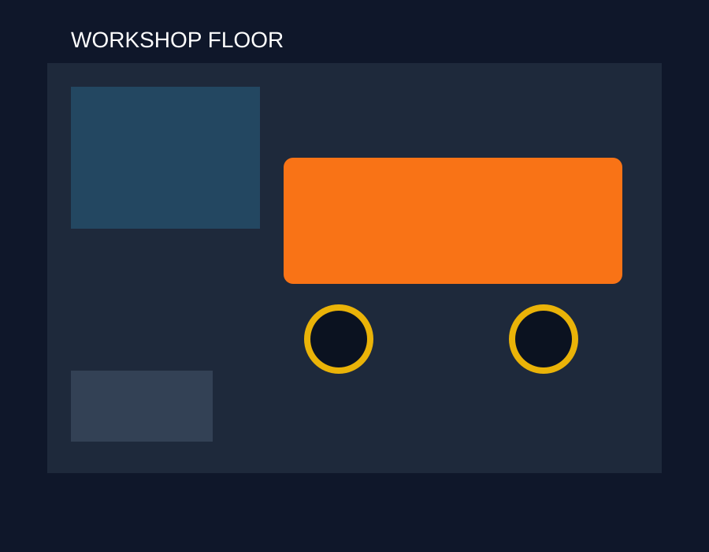

Professional & expert
Modern diagnostic technology with practical mechanical expertise — everyday cars through to EV and hybrid systems.
Your local mechanic in Middleton, Christchurch — diagnostics, repairs, and EV & hybrid servicing.
Auto Bridge is a car repair shop at 11a Midas Place, Middleton, Christchurch 8024. We combine modern diagnostic technology with practical mechanical expertise — from everyday cars to EV and hybrid systems.
Our focus is safety, precision and long-term performance. Honest advice, transparent service, and workmanship you can trust. No upsells, no surprises. Clear quotes before any work begins.
Find us on Google Maps or call +64 29 020 16792. We are listed as open 24 hours.

Modern diagnostic technology with practical mechanical expertise — everyday cars through to EV and hybrid systems.
No upsells, no surprises. Clear quotes before any work begins.
OEM-grade parts and meticulous workmanship on every job.
A 5.0-rated Christchurch car repair shop, open 24 hours when you need us.
Mechanical repairs
Diagnostics, brakes, suspension, cooling and general mechanical work at the Middleton workshop.
Specialist servicing
Hybrid system diagnostics, EV servicing, battery health checks and hybrid repairs.

Bookings & quotes
Call +64 29 020 16792 anytime — Auto Bridge is listed as open 24 hours.